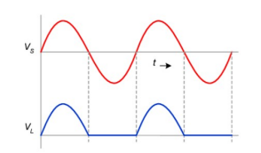

Half Wave Rectifier: Interactive Study Guide
Table of Contents
1. Objectives
- Construct a half wave rectifier circuit
- Observe and compare waveforms with and without filter capacitors
- Measure output voltages and calculate ripple factor
- Analyze how different filter capacitor values affect ripple factor
- Understand the relationship between load resistance and ripple factor
2. Theoretical Background
A half wave rectifier is a circuit that converts alternating current (AC) to direct current (DC) by eliminating one half of the input waveform. The resulting DC output contains significant ripple without filtering.
Key Concepts:
- Rectification: Process of converting AC to DC
- Ripple: Unwanted AC component in DC output
- Ripple Factor (γ): Ratio of RMS value of AC component to DC value
- Filter Capacitor: Reduces ripple by storing charge during peak voltage
Important Formulas:
Theoretical ripple factor for half wave rectifier without filter: γ = 1.21
With capacitor filter, ripple factor is approximately:
γ ≈ 1/(2√3fCRL) where f is frequency, C is capacitance, RL is load resistance
3. Circuit and Components
Circuit Diagram:
Half Wave Rectifier with Filter Capacitor
Components Required:
- Transformer: Step-down transformer (230V to 6V)
- Diode: 1N4007 silicon diode
- Filter Capacitors: 4.7μF, 10μF, 47μF, 100μF
- Load Resistors: Decade Resistance Box (100Ω to 2000Ω)
- Measuring Instruments: CRO, AC & DC Voltmeters, Digital Multimeter
Safety Note: Always ensure proper grounding when working with AC circuits. Never touch components when the circuit is powered.
4. Operation Principles
Basic Operation:
-
Positive Half Cycle:
When the input AC voltage is positive, the diode is forward biased and conducts current. The voltage appears across the load resistance.
-
Negative Half Cycle:
When the input AC voltage is negative, the diode is reverse biased and blocks current. No voltage appears across the load resistance.
-
Without Filter:
Output is a pulsating DC with large ripple, at the same frequency as the input AC.
-
With Filter Capacitor:
During positive half-cycle, capacitor charges to peak voltage. During negative half-cycle, capacitor discharges slowly through load resistance, reducing ripple.
Filter Action Explained:
The filter capacitor acts as a temporary energy storage device:
- During peak voltage, the capacitor charges rapidly
- When voltage drops, capacitor discharges slowly through load resistor
- Larger capacitor = slower discharge = less ripple
- Higher load resistance = slower discharge = less ripple
Key Insight: The time constant τ = R×C determines how quickly the capacitor discharges, directly affecting ripple.
5. Waveform Analysis
Without Filter:
Input (top) and Output (bottom) without filter
- Output follows input during positive half cycle
- Output is zero during negative half cycle
- High ripple content (theoretical γ = 1.21)
- Average output voltage ≈ 0.318 × peak voltage
With Filter:
Input (top) and Output (bottom) with filter
- Capacitor charges to peak during positive half cycle
- Slow discharge during negative half cycle
- Reduced ripple (γ depends on C and RL values)
- Average output voltage approaches peak voltage
CRO Measurements:
When observing waveforms on CRO, record:
- Volts/division setting
- Time/division setting
- Peak voltage value
- Frequency of waveform (should be 50Hz for mains AC)
- For filtered output, measure both peak (Vdc) and ripple voltage (Vr)
6. Ripple Factor Calculation
Definition:
The ripple factor (γ) is defined as the ratio of the RMS value of the AC component to the DC value in the output:
γ = Vr / Vdc
Where Vr is the RMS value of the ripple voltage and Vdc is the DC component.
How to Measure:

- Measure the peak-to-peak ripple voltage (Vpp) using CRO
- Calculate RMS ripple voltage: Vr = Vpp / 2√2
- Measure DC output voltage (Vdc) using DC voltmeter
- Calculate ripple factor: γ = Vr / Vdc
Expected Results:
- Without filter: γ ≈ 1.21 (theoretical value)
- With filter: γ decreases as capacitance increases
- Load effect: γ increases as load resistance decreases (more current drawn)
Data Collection Tables:
Use these tables to record your experimental results:
| RL (Ω) | Vdc (V) | Vr (V) | Ripple Factor (γ) |
|---|---|---|---|
| 100 | |||
| 500 | |||
| 1000 | |||
| 1500 | |||
| 2000 |
With fixed load (RL = 100Ω) and varying capacitance:
| Capacitance (μF) | Vdc (V) | Vr (V) | Ripple Factor (γ) |
|---|---|---|---|
| 4.7 | |||
| 10 | |||
| 47 | |||
| 100 |
7. Experimental Setup
Setup Diagram:

Procedure:
- Connect the circuit as shown in the diagram above
- Initially, set up the circuit without filter capacitor
- Power on the circuit and observe input and output waveforms on CRO
- Measure and record input voltage, output voltage, and frequency
- Vary load resistance (100Ω to 2000Ω) and observe changes in output
- Add filter capacitor (4.7μF) and repeat measurements
- Increase capacitor values (10μF, 47μF, 100μF) and observe effects
- Calculate ripple factor for each configuration
- Plot graph of ripple factor vs. capacitance and ripple factor vs. load resistance
Common Errors & Troubleshooting:
- Ensure diode is connected in correct polarity (cathode toward load)
- Verify electrolytic capacitors are connected with correct polarity
- Check transformer connections and voltage rating
- If no output, verify connections and check for open circuits
- Ensure proper grounding of CRO and circuit
8. Self-Assessment Quiz
1. What is the theoretical ripple factor for a half wave rectifier without filter?
2. The ripple factor in a capacitor filtered half wave rectifier will decrease when:
3. What is the purpose of the filter capacitor in a rectifier circuit?
4. In a half wave rectifier, the diode conducts during:
8. Self-Assessment Quiz
5. The average output voltage of a half wave rectifier without filter is approximately:
6. In a half wave rectifier with capacitor filter, if the load resistance is doubled, the ripple factor will:
7. Which of the following statements is TRUE about a half wave rectifier?
8. If the peak AC input voltage to a half wave rectifier is 10V, what would be the approximate DC output voltage without filter?
9. Which of the following increases the ripple in a half wave rectifier with filter?
10. The formula for calculating ripple factor in a half wave rectifier with capacitor filter is approximately:
9. Ripple Factor Calculator
Without Filter
Average DC: -- V
RMS Ripple: -- V
Ripple Factor: --
With Filter
DC Output (approx): -- V
Ripple Voltage (approx): -- V
Ripple Factor: --
Time Constant (τ): -- ms
Ripple Factor vs. Capacitance Graph
Key Takeaways
- A half wave rectifier converts AC to DC by allowing current flow during only the positive half of the AC cycle
- Without filtering, a half wave rectifier produces a pulsating DC with high ripple (γ = 1.21)
- Adding a filter capacitor significantly reduces ripple by maintaining voltage during the non-conducting cycle
- The ripple factor is inversely proportional to filter capacitance value and load resistance
- Larger capacitors and higher load resistances result in smaller ripple
- The time constant (RC) of the circuit determines the discharge rate and affects the ripple
Further Studies:
To expand your knowledge, consider exploring:
- Full wave rectifiers (center-tapped and bridge configurations)
- Advanced filtering techniques (LC filters, π-filters)
- Voltage regulation circuits to maintain stable DC output
- Effect of diode characteristics on rectifier performance